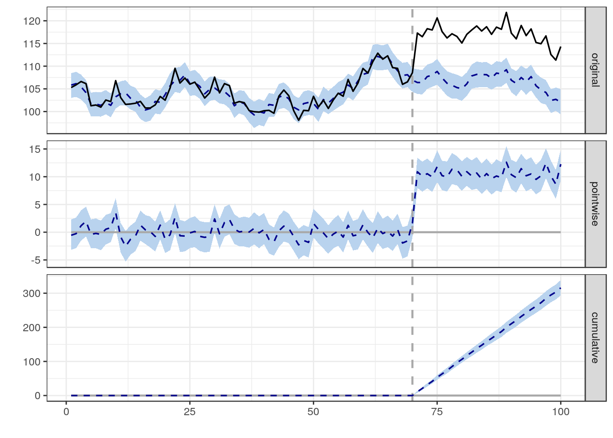

TV spot records
Actual airtime · market · network · creative · duration
EXPEDIA × TVSQUARED / DATA INTEGRATION
I worked directly with TVSquared’s CTO to adapt their measurement model to Expedia’s complex advertising mix across Google, Facebook, digital TV, and linear TV. Our work focused on better traffic-source tracking and cross-device identity stitching, connecting cookie-based signals to build a more complete customer view and feed it into TVSquared’s models.
Expedia customers could encounter our brand through search, social, and TV, then return on a different device. That made the measurement challenge broader than aligning an airing with a visit: we needed a clearer view of traffic sources and customer journeys across channels and devices.
I worked directly with the CTO to adjust the model for that complexity. We focused on tracking web traffic sources and stitching cookie-based identity signals across devices, mapping our customer base and feeding those signals into their measurement models. The goal was to better distinguish TV response within Expedia’s wider digital advertising activity.
The architecture, sample schemas, code, and interactive data below explain the technical problem. They are illustrative, not a disclosure of Expedia’s production system or TVSquared’s proprietary algorithm. No historical campaign lift is claimed.
Actual airtime · market · network · creative · duration
Traffic source · market · response events · customer identity signals
Bring traffic-source labels and linked customer signals into the measurement inputs. Align timestamps and markets, and preserve unresolved identities rather than assuming every device belongs to a known customer.
Model the traffic expected without the TV response signal.
Find candidate spots by market and time. Flag overlaps.
Compare creative, network, and daypart with sample size, spend, and uncertainty in view.
Illustrative integration architecture. Arrows describe information flow, not a verified implementation diagram.
Explore synthetic minute-level sessions. Change the window or introduce a second spot to see why a traffic spike alone cannot identify the ad that caused it.
excess_sessions = Σ(observed[t] − expected[t])
response_pct = excess_sessions / Σ(expected[t]) × 100
# t = 0 through window − 1; negative residuals are retained.
# This is a toy residual calculation, not TVSquared attribution.| Minute after spot | Observed | Expected | Residual |
|---|
All counts are synthetic. The baseline is supplied by the demo, not fitted to traffic. Window options are sensitivity checks, not claimed vendor defaults. No confidence interval or causal lift is estimated.
I also used CausalImpact analysis during my time at Expedia. It brings a complementary question to the TV measurement story: did performance change beyond what we would have expected without the intervention?
The TV lab above explores traffic around individual airings. CausalImpact supports a broader before-and-after analysis using a modeled counterfactual. These are complementary approaches, not a claim that TVSquared ran CausalImpact inside its platform.
Fit a Bayesian structural time-series model to the outcome and control series before the intervention.
Estimate the post-period outcome without the intervention, using controls that were not affected by it.
Compare observed and predicted results. Inspect pointwise effects, cumulative effects, and posterior uncertainty intervals.

For a national TV campaign, another market may still be exposed. Branded search may respond to the campaign too. I would challenge any proposed control on spillover, concurrent campaigns, and whether its relationship with the outcome stays stable.
library(CausalImpact)
# Illustrative workflow, not historical Expedia code.
# daily_data: outcome first, unaffected controls after it.
# 84 pre-campaign days, followed by 28 campaign days.
pre.period <- c(1, 84)
post.period <- c(85, 112)
impact <- CausalImpact(
daily_data, pre.period, post.period,
model.args = list(nseasons = 7)
)
plot(impact)
summary(impact, "report")Example structure only. This page does not run R or show historical campaign estimates. The periods and weekly seasonality setting are illustrative.
Credible causal interpretation requires unaffected controls and a stable pre/post relationship. I would check pre-period prediction quality, placebo dates, and sensitivity to control selection before using the estimate to inform media spend.
Method reference: Google’s CausalImpact documentation. Bayesian structural time-series modeling estimates a counterfactual; it does not turn an observational analysis into a randomized experiment.
Innovid’s documented linear spike method combines ad occurrences with web or app responses. It continuously estimates a market-by-minute baseline, filters unlikely TV-driven traffic, and assigns probabilistic response while handling overlapping spots. Processing runs daily.
The separate impression-based approach adds exposure data and household matching. The documentation describes control-group analysis and extrapolation for that approach. It is not simply the same spike calculation with a longer window.
Method reference: Innovid: Approach to Linear TV Attribution, updated Feb. 18, 2025. This current reference explains the methods; it does not establish which exact features Expedia used historically.
Above-baseline visits do not automatically establish incremental bookings or ROI. I would pair response estimates with controlled geo tests, placebo airing times, baseline backtests, and checks for concurrent marketing. Short windows can miss delayed brand effects; longer windows admit more competing explanations.
Compare response per airing and cost per modeled response within comparable markets and dayparts. Check repeated performance across spots before shifting a budget.
Look for stable estimates across reasonable windows, clean data delivery, and consistency with a controlled lift study. Treat uncertain results as uncertain rather than filling the gap with a confident story.